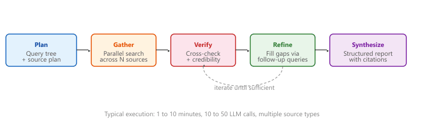

The difference between agentic RAG and a deep-research agent is a budget, a citation count, and 10 more minutes of patience.
RAG, Relentlessly Curious AI Agent
This section continues from Section 32.3, which built the agentic RAG loop (query decomposition, parallel multi-source retrieval, iterative refinement, credibility assessment, and synthesis). Here we step up one more tier to the deep-research architectures that frontier providers shipped in 2024-2025 (OpenAI Deep Research, Gemini Deep Research, Anthropic Claude Research), compare them with the simpler tiers, and walk through a production case study (competitive-intelligence agent at a VC firm) plus a complete LlamaIndex agentic RAG example.
Prerequisites
This section continues from Section 32.3. Familiarity with query decomposition, parallel retrieval, source credibility scoring, and synthesis is assumed.
An astonishingly common 2023 RAG bug was the fixed-window chunker that happily sliced sentences in half. Retrieval looked plausible, embeddings cosine-matched, and answers degraded mysteriously. The fix, sentence-aware or recursive splitting, was so simple that production teams sometimes adopted it without ever publishing a post-mortem. The lesson lives on: 80% of bad RAG is bad chunking, and the remaining 20% is usually the embedding model trained on the wrong domain.
32.3.6 Deep Research Architectures
Several production systems have implemented deep research capabilities that go well beyond simple agentic RAG. These systems typically combine query planning, multi-source retrieval, iterative refinement, and long-form synthesis into a unified workflow.
32.3.6.1 Architecture Comparison
| Feature | Naive RAG | Agentic RAG | Deep Research |
|---|---|---|---|
| Retrieval steps | 1 | 2 to 5 | 10+ |
| Sources | Single vector store | Multiple stores | Web + docs + DB + APIs |
| Query planning | None | Decomposition | Hierarchical plan tree |
| Self-evaluation | None | Sufficiency check | Multi-criteria assessment |
| Output format | Short answer | Cited answer | Structured report |
| Typical latency | 2 to 5 seconds | 10 to 30 seconds | 1 to 10 minutes |
| Cost per query | $0.01 to $0.05 | $0.05 to $0.50 | $0.50 to $5.00 |
Agentic RAG introduces new failure modes beyond those of naive RAG. Query drift occurs when follow-up queries gradually shift away from the original question, retrieving increasingly irrelevant information. Infinite loops occur when the agent never reaches a "sufficient" evaluation. Conflation occurs when the agent mixes information from different sub-queries, creating false associations. Mitigate these with hard iteration limits, query relevance checks against the original question, and explicit source tracking throughout the pipeline.
The "Deep Research" row in Table 32.3a.1 is not hypothetical. OpenAI's Deep Research (launched February 2025) runs an o3-class reasoning model in a Plan-Gather-Verify-Synthesize loop, takes 5 to 30 minutes per query, and emits a structured report with hundreds of citations. Google's Gemini Deep Research (launched December 2024) uses the same architecture with Gemini 2.0 plus Google Search and Scholar. Anthropic's Claude Research feature (2025) runs Claude with web search and code execution in a similar loop. Each typically issues 30 to 100 web searches and reads 50 to 300 pages before drafting a report, which is why the cost-per-query column lists $0.50 to $5.00 rather than the $0.01 of a single-shot RAG call.

Combine vector similarity with keyword search (BM25) using reciprocal rank fusion. Vector search catches semantic matches while BM25 catches exact terms, acronyms, and IDs that embedding models often miss. This hybrid approach typically improves recall by 10 to 20%.
Who: A strategy analyst and an ML engineer at a venture capital firm.
Situation: Analysts spent 8 to 12 hours per company compiling competitive landscape reports by manually searching SEC filings, news articles, patent databases, and industry publications.
Problem: A single RAG query could not answer complex questions like "How has Company X's AI strategy evolved over the past three years, and how does it compare to their top two competitors?" This required synthesizing dozens of sources across multiple time periods.
Dilemma: Running a fully autonomous agent with web search access risked runaway API costs (one early prototype spent $47 on a single query by iterating 80 times). Limiting iterations to 5 produced shallow, incomplete reports.
Decision: They built an agentic RAG system with a plan-then-execute architecture: the planner decomposed each research question into 5 to 8 sub-questions, each sub-question was answered independently with a 10-iteration budget, and a final synthesis step merged findings into a structured report.
How: Each sub-agent used adaptive retrieval (checking if existing context already answered the question before issuing new searches). A cost monitor enforced a $5 ceiling per report. The system used Tavily for web search and a local vector store for previously ingested documents.
Result: Report generation time dropped from 10 hours to 25 minutes. Analysts rated the automated reports as "comparable quality" to manual reports for 73% of queries. Average cost per report was $2.80.
Lesson: Deep research agents need explicit budgets (both iteration count and dollar cost), a plan-then-execute structure, and deduplication to avoid redundant searches; unbounded iteration is the fastest path to wasted spend.
# Agentic RAG with LlamaIndex: a router agent picks WHICH index to query.
from llama_index.core import VectorStoreIndex, SimpleDirectoryReader
from llama_index.core.tools import QueryEngineTool, ToolMetadata
from llama_index.core.agent import ReActAgent
from llama_index.llms.openai import OpenAI
# Build two separate indices over different document sets
sec_index = VectorStoreIndex.from_documents(SimpleDirectoryReader("./sec_filings").load_data())
news_index = VectorStoreIndex.from_documents(SimpleDirectoryReader("./news").load_data())
# Wrap each as a tool the agent can call
tools = [
QueryEngineTool(
query_engine=sec_index.as_query_engine(similarity_top_k=5),
metadata=ToolMetadata(name="sec_filings",
description="Search SEC 10-K/10-Q filings for financial statements, risks, governance."),
),
QueryEngineTool(
query_engine=news_index.as_query_engine(similarity_top_k=5),
metadata=ToolMetadata(name="news",
description="Search recent news for analyst opinions and breaking news."),
),
]
llm = OpenAI(model="gpt-4o-mini", temperature=0.0)
agent = ReActAgent.from_tools(tools, llm=llm, verbose=True)
# Agent decides which tool(s) to call and synthesizes a citation-grounded answer
response = agent.chat("How did NVIDIA's data-center revenue change in Q3, and what do analysts attribute it to?")
print(response)QueryEngineTools, and a ReActAgent orchestrates multi-source retrieval to answer complex comparative questions.Planning-based RAG agents decompose complex queries into retrieval plans before executing any searches, improving both efficiency and coverage. Tool-augmented retrieval extends agentic RAG with access to calculators, code interpreters, and external APIs. Multi-agent RAG assigns different retrieval strategies to specialized agents (one for dense search, one for structured queries, one for web search) that collaborate through a shared workspace. Research into retrieval agent safety is developing guardrails that prevent agents from executing harmful or privacy-violating queries.
- Deep research is a budget-aware extension of agentic RAG: 10+ retrieval steps, multiple source types, hierarchical planning, multi-criteria self-evaluation, and structured-report output. Latency rises to minutes, cost to dollars.
- The frontier providers converged on Plan-Gather-Verify-Refine-Synthesize. OpenAI Deep Research, Gemini Deep Research, and Claude Research all instantiate the same five-phase loop.
- New failure modes appear at this tier: query drift, infinite loops, conflation. Mitigate with hard iteration limits, original-question relevance checks, and explicit source tracking.
- Budget your agent carefully: per-query dollar ceilings plus iteration ceilings are non-negotiable in production; one unbounded prototype spent $47 on a single query.
Show Answer
(1) Query drift: follow-up queries shift away from the original question. Mitigation: include the original question in every refinement prompt and compute relevance scores. (2) Infinite loops: the agent never reaches a "sufficient" evaluation. Mitigation: hard iteration limits. (3) Conflation: the agent mixes information from different sub-queries. Mitigation: explicit source tracking and per-sub-query provenance.
Show Answer
Vector search catches semantic matches but often misses exact terms, acronyms, ticker symbols, and IDs. BM25 catches those literally. Reciprocal rank fusion blends both rankings, typically improving recall by 10 to 20%.
Exercises
Compare the deep research architectures of Gemini Deep Research and OpenAI's approach. What are the key phases, and how do they handle iteration?
Show Answer
Both follow a Plan-Search-Verify-Synthesize loop. Gemini Deep Research emphasizes a visible research plan that users can review and edit. Key phases: (1) plan generation, (2) iterative search and reading, (3) fact verification, (4) report synthesis. The iteration limit and breadth of search are the main differentiators.
Build a parallel retrieval system that simultaneously queries a vector database, a web search API, and a knowledge graph. Implement result deduplication and source attribution.
Implement a credibility assessment module that scores retrieved documents based on source domain, publication date, and citation count. Weight the scores in the final context assembly.
Build a multi-phase deep research pipeline: planning phase (generate search plan), gathering phase (execute searches with iteration), verification phase (cross-check facts), and synthesis phase (generate a structured report with citations). Add a hard dollar-cost ceiling per report.
What Comes Next
In the next section, Section 32.4: Structured Data & Text-to-SQL, we cover structured data retrieval and text-to-SQL, enabling LLMs to query databases and structured sources.
For the agent-loop architectures (ReAct, Plan-and-Execute, multi-agent orchestration) that deep-research RAG inherits, see Section 26.1: AI Agents. For the FRAMES benchmark and other multi-hop RAG evaluations that measure deep-research quality, see Section 36.3: Datasets and Benchmarks. For agent-safety considerations (untrusted tool outputs, prompt injection through retrieved content), see Section 49.1: Agent Safety.